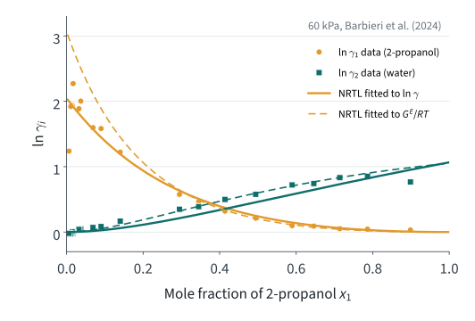
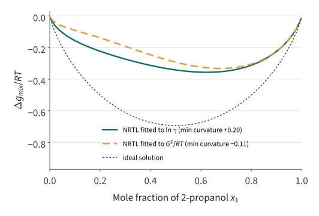
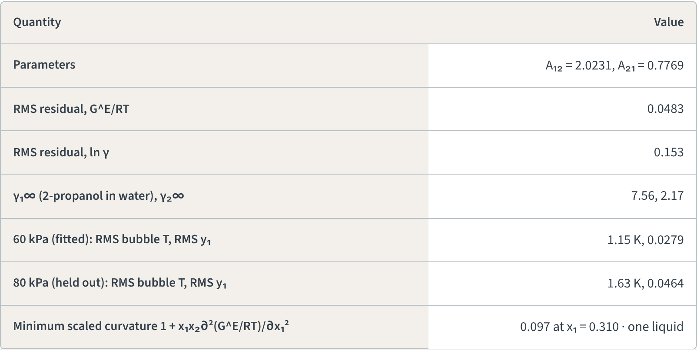

Session P6 of 7 · before the midterm · 180 minutes
Before the midterm · 7 sessions P1 · Framework P2 · PVT and equations of state P3 · Residual properties P4 · Pure-component equilibrium and fugacity P5 · Mixtures P6 · Excess properties and activity P7 · Choosing a property model
After the midterm · 7 sessions 1 · VLE and flash 2 · Experimental VLE and consistency 3 · Liquid stability and LLE 4 · Solids and adsorption 5 · Chemical equilibrium 6 · Electrochemical equilibrium 7 · Choosing a model from evidence
P5 defined the ideal solution, f̂i = xifi. Real liquids depart from it, often strongly. Today: excess properties, the activity coefficient that measures the departure, the standard states it refers to, and the models that represent it. Sessions 1–3 after the midterm use all of them.

2-propanol + water at 60 kPa. The same measured VLE, the same NRTL equation, two fitting objectives.
Fitted to ln γ: 2-propanol at infinite dilution in water has γ∞ = 7.7. Fitted to GE/RT: γ∞ = 21, and the model predicts a liquid split that does not exist.
Henry’s constant, stripping and the stability of the liquid all follow from that choice.
VLE: Barbieri et al., J. Chem. Thermodyn. 198 (2024) 107342. Lab P6.
Where you show it
0–30 Essential concepts GE, γ, standard states, models
30–40 Activity 1 γ from one VLE point
40–60 Demo Lab P6
60–70 Break
70–140 Activity 2 · pair investigation objectives, Henry, stability
140–180 Discussion and exit ticket answer the session question
Session question How do we measure and model the departure of a liquid mixture from the ideal solution, and what decides whether a fitted model can be trusted beyond its data?
Before class · 20 min Read the Session P6 pre-class note and answer its three questions.
After class · 40 min Finish Lab P6: the five models and both objectives, then A–C in the Graduate view. Submit the study file with your name and ID.
Studying on your own? Follow the same order. Turn on narration or captions at the bottom left, and pause at each activity slide.
The departure from the ideal solution at the same T, P and x:
M^E=M-M^{\text{id}},\qquad G^E=H^E-TS^E
For V and H the ideal-solution value is ΣxiMi*, so VE = ΔVmix and HE = ΔHmix.
\frac{\Delta g_{\text{mix}}}{RT}=\sum_ix_i\ln x_i+\frac{G^E}{RT}
GE > 0: positive deviation, the components prefer their own kind (2-propanol + water). GE < 0: negative deviation, unlike pairs attract (acetone + chloroform).
Ethanol + water, 298 K (P5): VE reaches −1.1 cm³/mol.
Temperature dependence: ∂(GE/RT)/∂T = −HE/RT². Constant parameters assume HE ≈ 0.
\gamma_i=\frac{\hat f_i}{x_if_i^\circ}
\frac{G^E}{RT}=\sum_ix_i\ln\gamma_i,\qquad \sum_ix_i\,d\ln\gamma_i=0
With the pure liquid as fi°, f_i^\circ=\varphi_i^{\text{sat}}P_i^{\text{sat}}\mathcal{P}_i (P4). Equal fugacity with the vapor gives
y_i\Phi_iP=x_i\gamma_iP_i^{\text{sat}},\qquad\Phi_i=\frac{\hat\varphi_i^{V}}{\varphi_i^{\text{sat}}\mathcal{P}_i}
ln γi = [∂(nGE/RT)/∂ni]T,P,nj is the partial molar property of GE/RT (P5), so the two ln γ are linked by Gibbs–Duhem.
At 60 kPa Φi ≈ 1 within about 1%: modified Raoult’s law, yiP = xiγiPisat.
2-propanol + water, 60 kPa, x₁ = 0.14: y₁ = 0.477, T = 342.9 K, P₁sat = 60.1 kPa: γ₁ = 3.40, γ₂ = 1.18, GE/RT = 0.315.
Sessions 1 and 2 after the midterm use the same γ–φ form, with Φi evaluated or set to 1.
Raoult (pure liquid): fi° = fi(T, P); γi → 1 as xi → 1.
Henry (infinite dilution): f̂i → xiHi as xi → 0, with
H_i=\gamma_i^\infty f_i\approx\gamma_i^\infty P_i^{\text{sat}}
\gamma_i^*=\gamma_i/\gamma_i^\infty\to1\ \text{as}\ x_i\to0
Molality (electrolytes, Session 6): ai = miγi/m°, m° = 1 mol/kg, with γi → 1 as m → 0.
The standard state is a choice. f̂i does not depend on it; the activity ai = f̂i/fi° = xiγi changes with fi°. Sessions 5 and 6 work with activities.
2-propanol in water, 345 K: From the ln γ fits, γ₁∞ ≈ 7.6–7.9 and H₁ ≈ 500–520 kPa. From the GE fits, H₁ = 840–3100 kPa.
Henry’s law suits a dilute solute or a supercritical gas, which has no pure liquid at T.
| Model | GE/RT or ln γ₁ | Parameters | Can it split? |
|---|---|---|---|
| Margules (1 or 2) | GE/RT = x₁x₂(A₂₁x₁ + A₁₂x₂); ln γ₁∞ = A₁₂ | A₁₂, A₂₁ | yes |
| van Laar | ln γ₁ = A₁₂(1 + A₁₂x₁/A₂₁x₂)−2 | A₁₂, A₂₁ | yes |
| Wilson | GE/RT = −Σxi ln(ΣxjΛij) | Λ₁₂, Λ₂₁ > 0 | no |
| NRTL | local compositions, Gij = exp(−ατij) | τ₁₂, τ₂₁, α | yes |
| UNIQUAC, UNIFAC | combinatorial + residual; UNIFAC from groups | from structure | yes |
Every model gives ln γi that satisfy Gibbs–Duhem by construction, because both come from one GE. Measured γ need not, which is the basis of the consistency tests in Session 2.
2-propanol + water, fitted at 60 kPa, predicted at 80 kPa
| Model, objective | γ₁∞ | RMS y₁, 80 kPa | split? |
|---|---|---|---|
| Margules 2, ln γ | 7.6 | 0.046 | no |
| NRTL 0.3, ln γ | 7.7 | 0.047 | no |
| Wilson, ln γ | 7.9 | 0.051 | no |
| Margules 2, GE | 12.7 | 0.032 | yes |
| NRTL 0.3, GE | 21.4 | 0.036 | yes |
| Wilson, GE | 47.4 | 0.041 | no |
GE/RT vanishes at both ends, so a GE fit is decided by the middle and leaves the dilute ends free.
The GE fits predict the 80 kPa y₁ slightly better and are wrong about infinite dilution and stability.
The stated uncertainty in x (0.02–0.03) is as large as the dilute compositions, so these data leave γ₁∞ uncertain by tens of percent whatever the fit.

One liquid is locally stable where
1+x_1x_2\frac{\partial^2(G^E/RT)}{\partial x_1^2}>0
NRTL, α = 0.3 Fitted to ln γ: minimum +0.20. Fitted to GE/RT: −0.11 at x₁ = 0.20, a split that the mixture does not show.
Wilson cannot go negative. Session 3 after the midterm treats stability and LLE in full.
Activity 1 · 10 minutes · alone, then with a partner
2-propanol (1) + water (2) at 60 kPa: x₁ = 0.4139, y₁ = 0.5347, T = 341.42 K. Antoine, log₁₀(P/bar) = A − B/(T + C): 2-propanol A = 4.861, B = 1357.427, C = −75.814; water A = 5.0768, B = 1659.793, C = −45.854. Compute Pisat, γ₁, γ₂ and GE/RT. Then compare γ₁ with the two-parameter Margules fit, A₁₂ = 2.023, A₂₁ = 0.777.
On your own: pause here and write your answer. In place of a partner, compare it with the next slide and write one sentence on any difference and its cause.
P₁sat = 56.28 kPa, P₂sat = 28.92 kPa at 341.42 K
γ₁ = 0.5347 × 60/(0.4139 × 56.28) = 1.377
γ₂ = 0.4653 × 60/(0.5861 × 28.92) = 1.647
GE/RT = 0.4139 ln 1.377 + 0.5861 ln 1.647 = 0.425
Margules at x₁ = 0.4139
ln γ₁ = x₂²[A₁₂ + 2(A₂₁ − A₁₂)x₁] = 0.3435 × (2.023 − 1.031) = 0.341
γ₁ = 1.41 against 1.38 from the data (+2%).
A 0.02 error in x₁ changes the data γ₁ by 5%: the difference is within the measurement.

Lab P6 should report Margules 2, ln γ: A₁₂ = 2.023, A₂₁ = 0.777 · γ∞ 7.56, 2.17 · RMS y₁ 0.028 (60 kPa), 0.046 (80 kPa) · curvature +0.097
Judging a model by its residuals alone. The GE fits have the smallest GE residuals and predict a split that does not exist.
Reporting γ∞ from a fit as measured. It is an extrapolation. Here it ranges from 7.6 to 47 depending on the model and the objective.
Mixing standard states. γi (Raoult) and γi* (Henry) differ by γi∞. Use the fi° that matches the γ.
Vapor pressures outside their range. The water Antoine fit ends at 363 K; the 80 kPa end points lie above it and are excluded.
Next Activity 2: a pair investigation in Lab P6, 70 minutes.
Before you leave your seat, check that Lab P6 opens on your device and that the first case is saved.
Activity 2 · 70 minutes · in pairs: one drives Lab P6, one checks by hand, then swap
20 min · models and objectives Lab P6 A: five models, two objectives. Rank them by the 80 kPa prediction, then by γ∞ and stability. Do the rankings agree?
15 min · Henry’s law Lab P6 B: H₁ at 345 and 355 K. Which number would you give a stripping-column designer, and with what uncertainty?
20 min · stability Lab P6 C: NRTL with α = 0.2, 0.3, 0.47. Which fits split, and what single measurement would settle it?
15 min · explain Two sentences with numbers answering the session question. Download the study file with your names and IDs.
On your own: do both roles yourself: work in Lab P6, then check one γ by hand. Pause the slides while you work; the next slide lists what to hand in.
Graduate extension Lab P6 E: a Margules fit written with an AI assistant, checked against the lab.
Check your results
| ln γ objective | GE objective | |
|---|---|---|
| γ₁∞, two-parameter models | 7.6–7.9 | 12.7–47 |
| H₁ at 345 K / kPa | 500–520 | 840–3100 |
| RMS y₁ at 80 kPa | 0.046–0.051 | 0.032–0.041 |
| fits that split (of 4) | 0 | 3 |
NRTL fitted to GE splits for α = 0.2, 0.3 and 0.47.
Discuss in pairs, then with the class. On your own: write two or three sentences for each question.
Definitions ME = M − Mid; γi = f̂i/(xifi°); ln γi = ∂(nGE/RT)/∂ni; Σxid ln γi = 0.
Standard states Raoult: γ → 1 as x → 1. Henry: Hi = γi∞fi, γ* → 1 as x → 0. The fugacity is the same in both.
Models and evidence Margules, van Laar, Wilson, NRTL. Judge them by held-out data, γ∞ and stability. The objective can change γ∞ threefold.
Session question: the departure is measured by γi from VLE and represented by a GE model. A model is trusted beyond its data only where independent evidence supports it: here the ln γ fits give γ₁∞ ≈ 7.7 and no split, as observed.
Next session P7: choosing a property model, and preparing for the midterm.
Exit ticket and feedback · alone · 5 minutes · anonymous
Two NRTL fits to the same VLE data give γ∞ of 2-propanol in water of 7.7 and 21. Explain how the fitting objective can cause this, and name one check that would tell you which fit to trust.
Scan the code or open the link. The same form asks three short questions about today: pace, confidence and whether the lab worked.
No name or student ID is recorded. Wait for “Response received.”
Hand in · this week Your Lab P6 study file with the models, A–C, name and student ID. Upload it to myCourseVille, in the assignment for that lab.
Prepare · Session P7 Read the Session P7 review guide. About 30 minutes.
Optional · graduate Lab P6 E: a Margules fit written with an AI assistant, checked against the lab.
Open Lab P6 in the Graduate view →
Starts at 4. Investigate what the activity data can support. A: Fit every model both ways. B: Compare the standard states. C: Test stability.